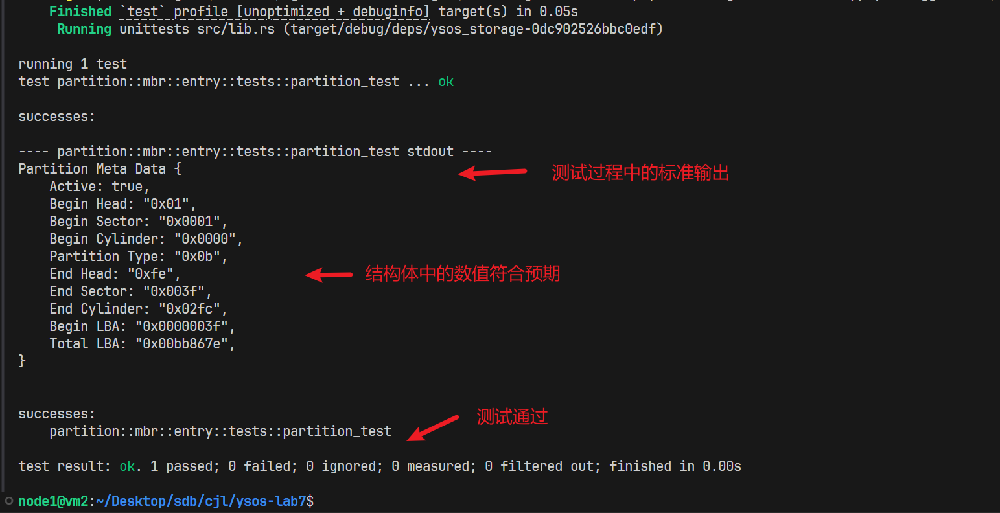
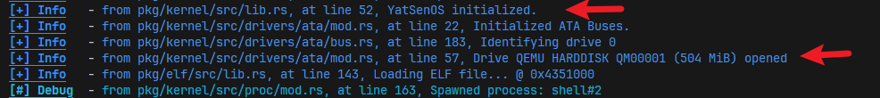
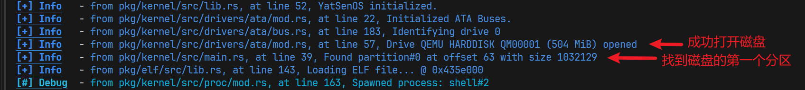
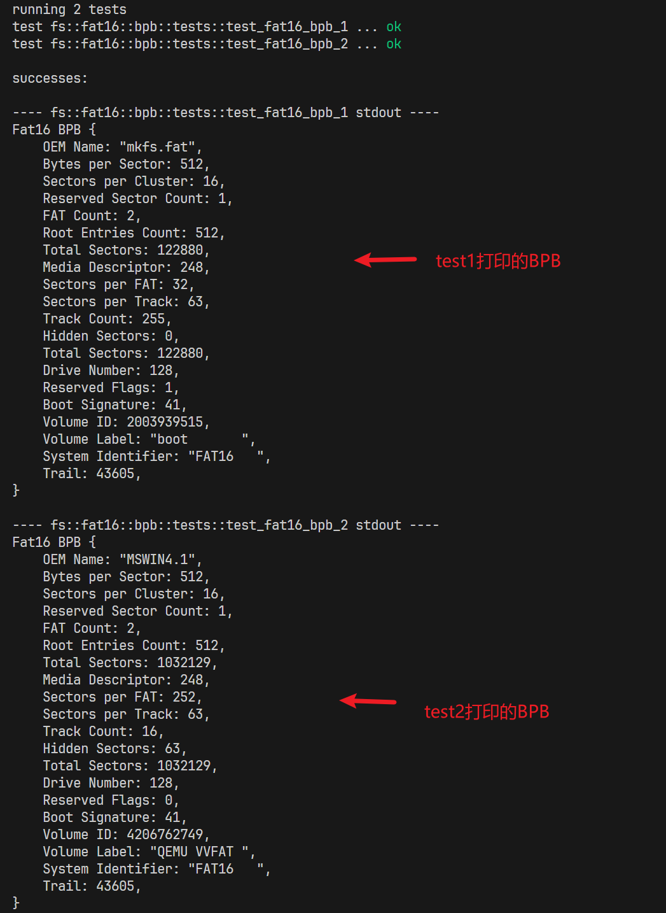
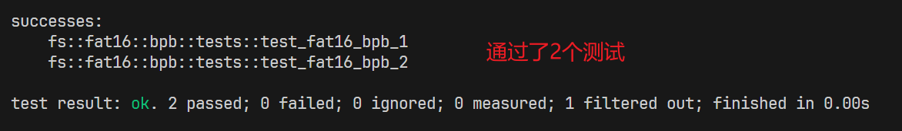
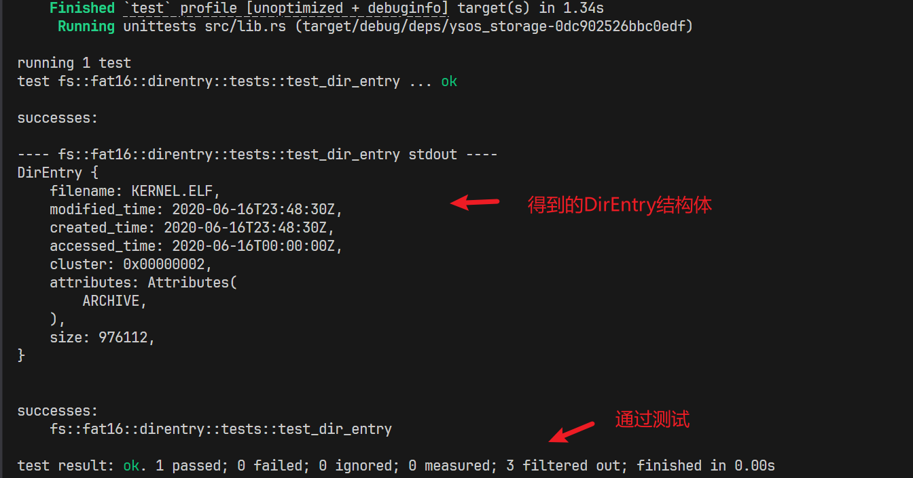
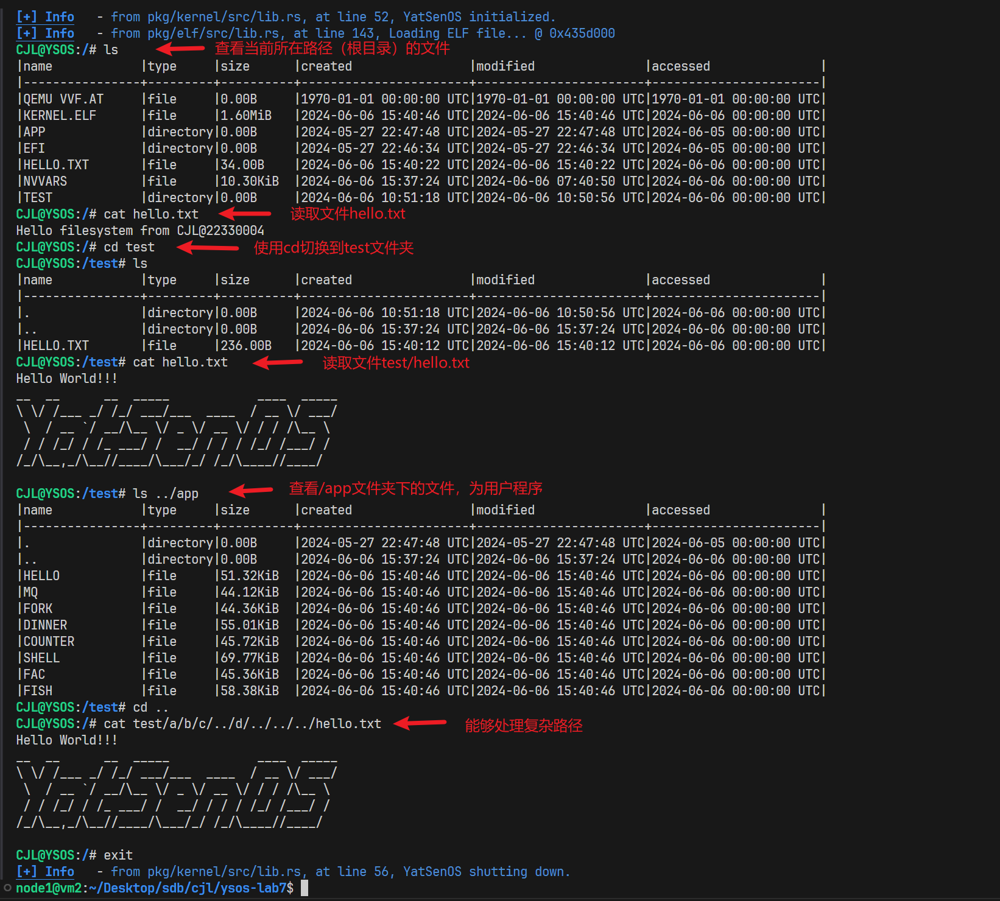
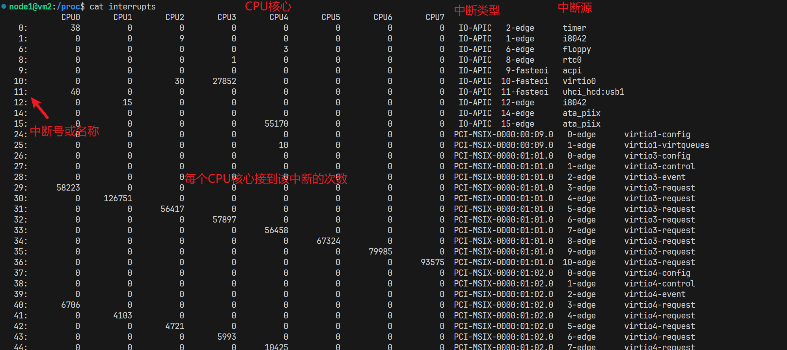
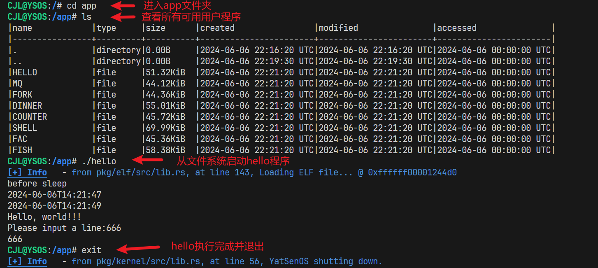

YSOS-rust lab6
YSOS-lab6
1. 实验要求
- 了解文件系统的概念、作用。
- 实现块设备、磁盘、分区、文件系统的抽象。
- 了解 ATA 硬盘的工作原理、实现基本的读写驱动。
- 实现 FAT16 文件系统的读取和只读文件访问。
2. 实验过程
milestone1:mbr模块
完成[相关代码](# 实现mbr模块)后，可运行pkg/storage/src/partition/mbr/entry.rs中的test，检验MbrPartition::parse的实现
运行指令cargo test --package ysos_storage --lib -- partition::mbr::entry::tests::partition_test --exact --show-output

milestone2:磁盘识别

完成[相关代码](# 实现命令发送与磁盘识别)后，可在YSOS启动后看到磁盘打开的日志
milestone3:磁盘读写

milestone4:BPB
运行cargo test --package ysos_storage --lib -- fs::fat16::bpb::tests::test_fat16_bpb_2 --exact --show-output，测试Fat16Bpb 的字段定义是否正确


milestone5:DirEntry
运行cargo test --package ysos_storage --lib -- fs::fat16::direntry::tests --show-output，检验DirEntry实现是否正确

milestone6:文件系统接入操作系统
完成[相关代码](# 实现文件系统)后，可实现milestone6

探索linux操作系统
-
procfs
在
/proc中，你可以找到一系列的文件和文件夹，探索他们并回答如下问题：-
解释
/proc下的数字目录代表什么，其内部存在什么内容？表示当前正在运行的进程，目录名即为进程的 PID，其内部包括进程的各种信息，包括进程对应的可执行文件为
exe，进程的统计信息为stat -
/proc/cpuinfo和/proc/meminfo存储了哪些信息？/proc/cpuinfo列出了系统上 CPU 的信息，包括型号、速度和核心数量。/proc/meminfo列出了当前的内存使用情况 -
/proc/loadavg和/proc/uptime存储了哪些信息？/proc/loadavg文件包含了系统负载平均值的统计信息。五个字段分别是：最近1分钟的系统负载平均值，最近5分钟的系统负载平均值，最近15分钟的系统负载平均值，正在运行的进程数/总进程数，最后一个创建或终止的进程的 PID/proc/uptime文件包含了系统启动以来的运行时间和空闲时间，这个文件有两个字段，都以秒为单位，分别是系统启动以来的总运行时间和系统所有CPU核心的总空闲时间 -
尝试读取
/proc/interrupts文件，你能够从中获取到什么信息？系统中中断的统计信息，详细列出了各个 CPU 接收到的各种中断的次数，以及每个中断的来源

-
尝试读取
/proc/self/status文件，你能够从中获取到什么信息？/proc/self/status文件提供了当前进程的状态信息。self是一个特殊的符号链接，指向读取该文件的进程的目录，因此/proc/self/status实际上是/proc/[pid]/status，其中[pid]是当前进程的进程 ID。 -
尝试读取
/proc/self/smaps文件，你能够从中获取到什么信息？/proc/self/smaps文件提供了当前进程的内存映射和每个映射区域的详细内存使用情况。包括以下信息：- 该内存映射区域的起始地址和结束地址。
- 该内存映射区域的权限（读、写、执行、共享/私有）
- 映射文件的偏移量。
- 设备号（主设备号和次设备号）
- 文件的 inode 号
- 文件路径
-
结合搜索，回答
echo 1 > /proc/sys/net/ipv4/ip_forward有什么用？尝试据此命令，从系统调用角度，解释 “一切皆文件” 的优势。这是一个在 Linux 系统中用来启用 IP 转发的命令。这条命令的作用是将内核参数
ip_forward设置为 1，从而允许操作系统在不同的网络接口之间转发 IP 数据包。启用 IP 转发后，Linux 设备可以作为一个路由器，转发来自一个网络接口的数据包到另一个网络接口。这对于配置网络桥接、NAT 以及创建 VPN 等应用非常重要。
从系统调用角度看，由于一切资源都可以视为文件进行操作，系统调用的种类和数量得以减少，简化了系统接口。
-
-
devfs
Linux 将设备也作为“文件”，默认挂载于
/dev目录下，探索他们并回答如下问题：-
/dev/null、/dev/zero、/dev/random和/dev/urandom分别有什么作用？-
null设备文件是一个“黑洞”，写入到它的所有数据都会被丢弃。读取这个文件永远返回 EOF使用场景包括
- 丢弃输出: 将不需要的输出重定向到
/dev/null以防止其显示在屏幕上。例如，command > /dev/null 2>&1将命令command的标准输出和标准错误输出都丢弃。 - 作为输入: 使用
/dev/null作为命令或程序的输入，避免需要实际文件。例如，cat /dev/null将输出空内容。
- 丢弃输出: 将不需要的输出重定向到
-
zero设备文件提供无限量的零字节。当读取这个文件时，会返回连续的零字节（0x00）。
使用场景包括
-
初始化文件: 可以用来初始化文件内容为零。例如，
dd if=/dev/zero of=emptyfile bs=1M count=1创建一个大小为 1MB 的全零文件。 -
虚拟内存: 在一些虚拟内存操作或需要大块零字节数据的情况下使用。
-
random设备文件生成高质量的随机数据。这些数据来源于系统中收集的环境噪声，因此熵值较高，但数据生成可能较慢。使用场景包括
- 密码学应用: 由于其高熵特性，适用于生成需要高安全性的随机数，如密钥、密码等。
- 随机数生成: 适合需要高质量随机数的场景，但要注意可能会因为熵不足导致读取变慢。
-
urandom设备文件生成伪随机数据，使用的是加密算法对内核熵池的数据进行扩展。虽然不如/dev/random的数据质量高，但速度更快，不会阻塞。使用场景包括
- 常规随机数生成: 适用于大多数非密码学应用，如生成随机文件名、随机测试数据等。
- 性能要求较高的随机数生成: 在要求高性能但不要求极高安全性的情况下使用。
-
-
尝试运行
head /dev/kmsg并观察输出，结合搜索引擎，解释这一文件的作用。用于查看内核日志消息。具体来说，
/dev/kmsg是一个字符设备文件，它提供了内核消息缓冲区的内容。使用head /dev/kmsg可以从这个缓冲区的开头读取并显示一些消息。head命令默认显示文件的前 10 行内容。 -
/dev/sdX和/dev/sdX1（X 为一个字母，1 为数字）是什么？有什么区别？如果你正在使用的 Linux 系统中不存在这样的文件，请找到功能类似的文件，并解释。可以找到例如
/dev/sda和/dev/sda1这样的文件，用于表示硬盘和硬盘上的分区。/dev/sda:
- 表示整个硬盘设备（或存储设备）。
- “sda” 中的 “sd” 代表 SCSI 磁盘设备，“a” 代表第一个设备。如果有多个 SCSI 磁盘设备，它们会依次命名为 sdb、sdc 等。
- 不包含任何分区信息，只是表示整个物理存储设备。
/dev/sda1:
- 表示硬盘上的第一个分区。
- “sda1” 中的 “1” 代表第一个分区。同理，第二个分区会是 sda2，第三个是 sda3，以此类推。
- 这个设备文件包含了特定分区的信息，可以直接挂载并使用该分区上的文件系统。
-
/dev/ttyX、/dev/loopX、/dev/srX分别代表什么设备？-
/dev/ttyX：tty代表 “teletypewriter”。/dev/ttyX表示终端设备，其中X是一个数字，表示具体的终端。例如，/dev/tty1表示第一个虚拟控制台。这些设备通常用于与用户交互的终端会话。 -
/dev/loopX：loop设备是用于创建虚拟块设备的设备文件。/dev/loopX表示环回设备，其中X是一个数字，表示具体的环回设备。例如，/dev/loop0是第一个环回设备。环回设备可以将一个普通文件当作块设备来使用，这在创建和测试磁盘镜像或挂载文件系统时非常有用。 -
/dev/srX：sr代表 SCSI CD-ROM 设备。/dev/srX表示 SCSI 光盘驱动器设备，其中X是一个数字，表示具体的光盘驱动器。例如，/dev/sr0是第一个 SCSI 光盘驱动器。这些设备通常用于光盘驱动器，如 CD、DVD 驱动器。
-
-
列出
/dev/disk下的目录，尝试列出其中的“软连接”，这样的设计有什么好处？/dev/disk目录下通常包含与磁盘和存储设备相关的设备文件。通常
/dev/disk目录下会有以下几个子目录：/dev/disk/by-id: 按设备ID列出设备。/dev/disk/by-path: 按设备路径列出设备。/dev/disk/by-uuid: 按设备UUID列出设备。/dev/disk/by-label: 按设备标签列出设备。
每个子目录中的条目一般都是指向实际设备文件的软连接。
这些软连接有助于系统管理员更方便、稳定地管理和引用存储设备，避免设备名变化带来的潜在问题。
-
尝试运行
lsblk命令，根据你的输出，解释其中的内容。lsblk用于列出有关块设备的信息，如硬盘、SSD、光盘驱动器等。默认情况下，
lsblk命令列出系统中所有的块设备，包括硬盘、分区、光驱等。lsblk以树形结构显示块设备和它们之间的关系，例如硬盘和它的分区。可以通过指定选项来显示更多详细信息，如设备的大小、类型、文件系统、挂载点等。
-
-
tmpfs
在 Linux 中
/dev/shm、/run或者/var/run目录下，存储了一个特殊的文件系统，它是一个内存文件系统，探索它并回答如下问题：-
列出这些目录，尝试找到扩展名为
pid的文件。应用程序如何利用它们确保某个程序只运行一个实例？程序在启动时可以查看
/run目录下是否存在/run/进程名.pid文件，如果存在则说明程序已经运行了一个实例，否则可以创建该文件标记程序已经运行了一个示例，避免重复创建实例 -
列出这些目录，尝试找到扩展名为
lock的文件。应用程序如何利用它们确保某个资源只被一个程序访问？当应用程序需要访问某个资源时，它首先会尝试在
/run目录下创建一个扩展名为lock的锁文件。通常这个锁文件的命名与所要锁定的资源相关，以便容易识别。如果锁文件已经存在，其他应用程序就无法访问所需资源 -
列出这些目录，尝试找到扩展名为
sock或socket的文件。应用程序如何利用它们实现进程间通信？.sock或.socket文件通常表示Unix域套接字，这是进程间通信（Inter-Process Communication, IPC）的一种机制。Unix域套接字允许同一主机上的不同进程进行通信，具有高效、低延迟的特点。需要通信的程序只需要创建套接字，连接到套接字文件，可以通过套接字文件进行通信
-
tmpfs的存在对于操作系统有什么作用？尝试从性能、安全性、系统稳定性几方面进行回答。tmpfs是一种基于内存的文件系统，它的主要作用是将临时文件存储在内存中，而不是磁盘上。-
性能：
-
快速存取，由于
tmpfs是基于内存的文件系统，读写操作的速度非常快，通常比磁盘操作快得多。这可以显著提升使用临时文件的应用程序的性能，例如编译器、Web服务器缓存等。 -
减少I/O瓶颈，使用
tmpfs可以减少磁盘I/O操作，避免磁盘成为系统的性能瓶颈。这对于高I/O密集型的任务尤其有益。 -
系统可以将常用数据放入
tmpfs，以便快速访问，从而提高整体系统的响应速度。
-
-
安全性：
-
tmpfs中的数据在系统重启或文件系统卸载时会消失。这种特性可以防止敏感数据在磁盘上长期存储，减少数据泄露的风险。 -
由于
tmpfs仅存储在内存中，不会写入磁盘，防止了恶意软件或攻击者从磁盘中提取临时数据，从而增强数据的安全性。 -
可以为不同的用户或进程创建独立的
tmpfs文件系统，确保临时文件的隔离，避免数据泄露和权限问题。
-
-
系统稳定性：可减少磁盘磨损，避免磁盘空间耗尽
-
-
-
在完全手动安装一个 Linux 操作系统时，我们常常会将待安装的磁盘（分区）格式化后，使用
mount挂载于/mnt目录下。之后，可以使用chroot切换根目录，在“新的操作系统”中进行安装后期的工作。然而在
chroot /mnt之前，还需要进行一些额外的挂载操作：1
2
3
4mount proc /mnt/proc -t proc -o nosuid,noexec,nodev
mount sys /mnt/sys -t sysfs -o nosuid,noexec,nodev,ro
mount udev /mnt/dev -t devtmpfs -o mode=0755,nosuid
...尝试解释上述举例的的挂载命令，思考为什么需要这样的挂载操作？如果不进行这些操作，在
chroot之后会失去哪些能力？
在进行
chroot切换根目录之前，进行这些额外的挂载操作是为了确保新的操作系统环境中具备必要的文件系统和设备节点，从而让系统在chroot之后可以正常运行和进行各种管理操作。如果不挂载
proc文件系统：ps、top等命令将无法正常工作，因为它们依赖于/proc中的信息来显示进程状态。- 很多系统管理工具也依赖于
/proc，例如sysctl。
sysfs文件系统提供内核对象的视图，主要用于显示设备信息。这个文件系统在/sys目录下挂载，可以显示和管理系统设备和相关内核参数。如果不挂载
sys文件系统：- 系统硬件信息将不可访问，导致某些设备驱动和系统管理工具无法正常工作。
- 设备管理和配置工具（如
udevadm）将无法正常操作。
devtmpfs文件系统是一个专门用于设备节点的伪文件系统，它自动创建和管理设备节点。这个文件系统挂载在/dev目录下，提供对系统设备的访问。如果不挂载
dev文件系统：- 设备节点将无法访问，导致许多基本的设备操作（如磁盘访问、网络接口等）无法进行。
- 系统中的许多设备相关工具和命令（如
lsblk、fdisk）将无法正常使用。
思考题
-
为什么在
pkg/storage/lib.rs中声明了#![cfg_attr(not(test), no_std)]，它有什么作用？哪些因素导致了kernel中进行单元测试是一个相对困难的事情？
这是一个条件编译指令，它的作用是在非测试环境下禁用标准库（
std）cfg_attr(condition, attribute)是一个条件编译宏，它的作用是如果condition为真，则应用attribute。not(test)是一个编译条件，它在非测试环境下为真。也就是说，当你运行cargo build或cargo build --release时，这个条件为真；但当你运行cargo test时，这个条件为假no_std是一个属性，它告诉编译器不要链接标准库（std）单元测试相对困难，是因为测试一小部分代码就必须要编译整个内核，如果代码有很多部分未完成，是很难通过编译的。另外，测试代码是在宿主机上运行，而不是在qemu中运行，运行环境不同，可能会出现错误
-
留意
MbrTable的类型声明，为什么需要泛型参数T满足BlockDevice<B> + Clone？为什么需要PhantomData<B>作为MbrTable的成员？在PartitionTabletrait 中，为什么需要Self: Sized约束？
-
BlockDevice<B>trait 让MbrTable可以使用其中的方法与T类型的实例进行交互，确保它们符合块设备的行为。Clonetrait确保MbrTable可以在需要时安全地克隆T类型的实例 -
PhantomData是一个零大小类型，用于表示某个类型参数被使用，尽管在编译时没有实际的值关联到这个类型参数。这在泛型编程中非常有用，尤其是在需要在类型系统中反映一些类型信息，但在运行时并不需要持有该类型的实际值。PhantomData<B>告诉编译器MbrTable与类型B相关联，即使MbrTable的字段中没有实际存储B类型的值。这对于保证类型系统的正确性和完整性非常重要。PhantomData<B>可以帮助 Rust 的借用检查器理解MbrTable对B类型的生命周期和所有权关系。例如，如果B包含一些生命周期参数，PhantomData<B>可以让编译器追踪这些生命周期。 -
Self: Sized约束在 trait 中的使用主要是为了确保实现该 trait 的类型是已知大小的（即编译时大小已知），否则代码fn parse(inner: T) -> Result<Self>;会出现报错
-
-
AtaDrive为了实现MbrTable，如何保证了自身可以实现Clone？对于分离AtaBus和AtaDrive的实现，你认为这样的设计有什么好处？
-
#[derive(Clone)]宏会自动为标记了该宏的结构体实现Clonetrait, Rust 编译器会自动生成一个Clonetrait 的实现。具体来说，
AtaDrive结构体中的u8,u32,Box<str>都实现了Clonetrait。#[derive(Clone)]宏会为AtaDrive结构体生成一个clone方法。这个clone方法会依次调用bus、drive、blocks、model和serial字段各自的clone方法。由于这些字段的类型都已经实现了Clonetrait，编译器可以确保生成的clone方法是有效的。 -
代码更加模块化，易于维护。通过分离
AtaBus和AtaDrive，可以在不修改总线实现的情况下，复用AtaDrive实现。这对于支持多种总线协议（如 IDE、SATA 等）非常有用。当需要添加新的驱动器类型或新的总线类型时，只需添加新的类而不必修改现有的类。
-
-
结合本次实验中的抽象和代码框架，简单解释和讨论如下写法的异同：
-
函数声明：
fn f<T: Foo>(f: T) -> usizefn f(f: impl Foo) -> usizefn f(f: &dyn Foo) -> usize
fn f<T: Foo>(f: T) -> usize和fn f(f: impl Foo) -> usize都使用了编译时的泛型和单态化，提供高效的性能，但增加了代码尺寸。前者显式定义泛型，后者使用impl Trait简化语法。fn f(f: &dyn Foo) -> usize使用了特性对象和动态派发，带来了运行时的灵活性和较小的代码尺寸，但有运行时开销。 -
结构体声明：
struct S<T: Foo> { f: T }struct S { f: Box<dyn Foo> }
struct S<T: Foo> { f: T }使用了编译时的泛型和单态化，提供高效的性能，但增加了代码尺寸。适用于需要高性能和编译时确定类型的场景。struct S { f: Box<dyn Foo> }使用了特性对象和动态派发，带来了运行时的灵活性和较小的代码尺寸，但有运行时开销和堆分配开销。适用于需要在运行时处理多态性和动态类型的场景。
-
-
文件系统硬链接和软链接的区别是什么？Windows 中的 “快捷方式” 和 Linux 中的软链接有什么异同？
硬链接
- 硬链接是文件系统中多个文件名指向同一个文件数据块。它们共享相同的 inode 号。
- 删除任意一个硬链接不会影响其他硬链接和文件的实际数据。文件只有在所有硬链接被删除后，文件数据才会被释放。
- 硬链接不能跨文件系统（不同分区），且不能对目录创建硬链接（在大多数文件系统中）。
- 硬链接之间是完全一致的，修改任何一个硬链接内容都会反映在所有硬链接中。
软链接
- 软链接是一个独立的文件，包含指向目标文件或目录路径的引用。它们有自己的 inode 号。
- 如果删除了目标文件，软链接会变成一个“悬空”链接（指向无效路径），但软链接本身仍存在。
- 软链接可以跨文件系统（不同分区），并且可以指向目录。
- 软链接是一个不同的文件，与目标文件的修改和删除有一定的独立性。
Windows 中的快捷方式与 Linux 中的软链接
- Windows 快捷方式：
- 快捷方式是一个特殊的文件（.lnk 文件），它包含了目标文件或程序的位置、图标、快捷键等元数据。
- 快捷方式的功能主要依赖于 Windows 操作系统，其他操作系统可能无法识别或处理这些快捷方式文件。
- Linux 软链接：
- 软链接是一个符号链接文件，指向目标文件或目录路径。
- 独立于操作系统，符号链接的机制是文件系统级别的，许多类 Unix 系统都支持。
-
日志文件系统（如 NTFS）与传统的非日志文件系统（如 FAT）在设计和实现上有哪些不同？在系统异常崩溃后，它的恢复机制、恢复速度有什么区别？
数据结构和元数据管理
NTFS使用B树结构来管理文件和目录，提高了查找速度和存储效率。每个文件和目录都有一套详细的元数据，包括安全属性、时间戳、文件权限等。支持压缩、加密、磁盘配额等高级功能。
FAT使用简单的链表结构来管理文件和目录，随着文件系统的增长，查找效率可能降低。元数据相对简单，主要包括文件名、大小、创建时间等。不支持高级功能，安全性和灵活性较低。
日志记录：
NTFS采用日志记录机制，在执行写操作前先将操作记录在日志中。日志记录包括元数据和文件数据的修改，确保系统在崩溃后可以回滚未完成的操作，维持文件系统的一致性。
FAT不使用日志记录机制，直接在磁盘上执行写操作。缺乏事务管理和回滚机制，系统崩溃时数据可能处于不一致状态。
恢复机制
NTFS具有更强大的恢复机制。操作系统可以使用日志中的信息来回滚未完成的操作，以确保文件系统的一致性。
FAT文件系统没有事务日志的概念，因此在系统异常崩溃时，可能会导致文件系统处于不一致的状态。FAT文件系统通常通过扫描文件系统来检测和修复损坏的文件系统结构，这需要一些时间，并且不如NTFS那样可靠、快速。
加分项
😋 你的操作系统拥有了直接读取文件系统的能力，不妨将加载用户态应用的工作从 bootloader 手中接过：
- 重新修改
spawn函数的实现，接受一个文件路径。 - 使用
read_all加载对应的文件。 - 将文件内容传入
elf_spawn。 - 在操作系统初始化后，使用文件路径生成 Shell 程序。
- 修改对应的系统调用，将
Spawn调用的参数从应用名称改为路径。 - 赋予你的 Shell 从磁盘启动用户程序的能力！

3. 关键代码
实现mbr模块
pkg/storage/src/partition/mbr/entry.rs
1 | |
至此，可实现[milestone1](# milestone1:mbr模块)
实现命令发送与磁盘识别
pkg/kernel/src/main.rs
1 | |
实现open函数
pkg/kernel/src/drivers/ata/mod.rs
1 | |
identify_drive
pkg/kernel/src/drivers/ata/bus.rs
1 | |
pkg/storage/src/partition/mbr/mod.rs
1 | |
pkg/storage/src/common/block.rs
1 | |
至此，可实现[milestone2](# milestone2:磁盘识别)
实现磁盘读写
pkg/kernel/src/drivers/ata/bus.rs
1 | |
pkg/kernel/src/main.rs
1 | |
至此，可实现[milestone3](# milestone3:磁盘读写)
实现BPB
pkg/storage/src/fs/fat16/bpb.rs
1 | |
至此，可实现[milestone4](# milestone4:BPB)
实现DirEntry
1 | |
实现文件系统
Fat16impl
pkg/storage/src/fs/fat16/impls.rs
1 | |
文件读取的逻辑
pkg/storage/src/fs/fat16/file.rs
1 | |
ls和cat的底层实现
pkg/kernel/src/drivers/filesystem.rs
1 | |
接入操作系统
pkg/kernel/src/lib.rs
1 | |
系统调用侧
pkg/syscall/src/lib.rs
1 | |
pkg/kernel/src/interrupt/syscall/service.rs
1 | |
pkg/lib/src/syscall.rs
1 | |
在用户shell中加入ls,cat和cd
pkg/app/shell/src/main.rs
1 | |
pkg/app/shell/src/myls.rs
1 | |
pkg/app/shell/src/mycd.rs
1 | |
pkg/app/shell/src/mycat.rs
1 | |
至此，可实现[milestone6](# milestone6:文件系统接入操作系统)
从文件系统启动应用
实现对大文件的读取
pkg/storage/src/fs/fat16/file.rs
1 | |
pkg/kernel/src/drivers/filesystem.rs
1 | |
从文件启动进程
pkg/syscall/src/lib.rs
1 | |
pkg/kernel/src/interrupt/syscall/service.rs
1 | |
pkg/kernel/src/proc/mod.rs
1 | |
用户侧
pkg/app/shell/src/myrun.rs
1 | |
至此，可实现[加分项](# 加分项)
4. 实验结果
5. 总结
熟悉了磁盘IO的工作原理和文件系统的实现，实现了一个更好用的shell